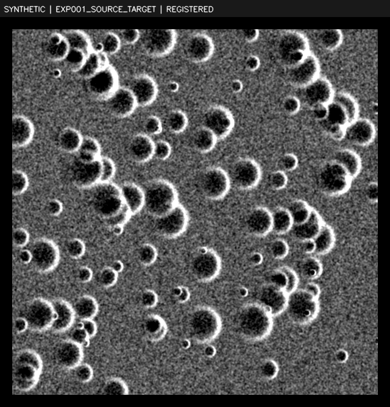
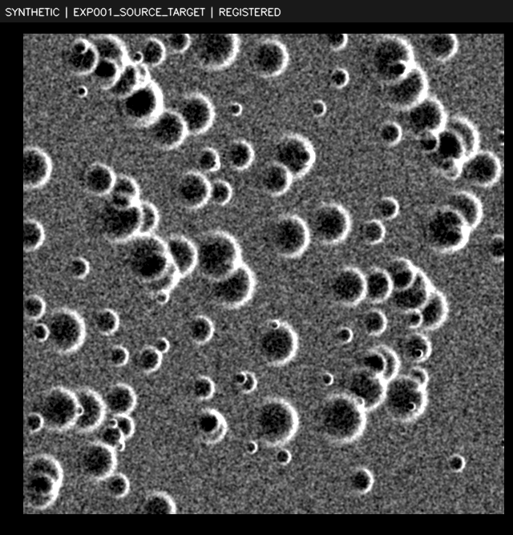
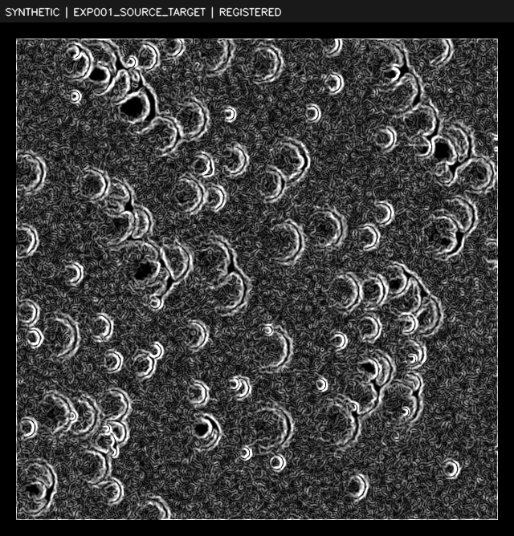
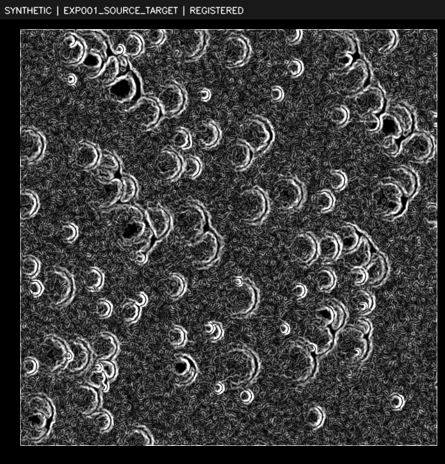
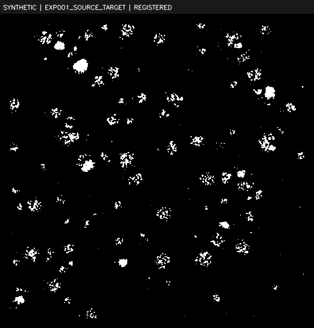
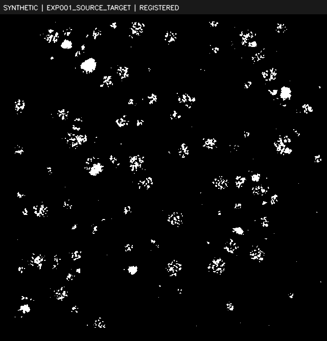
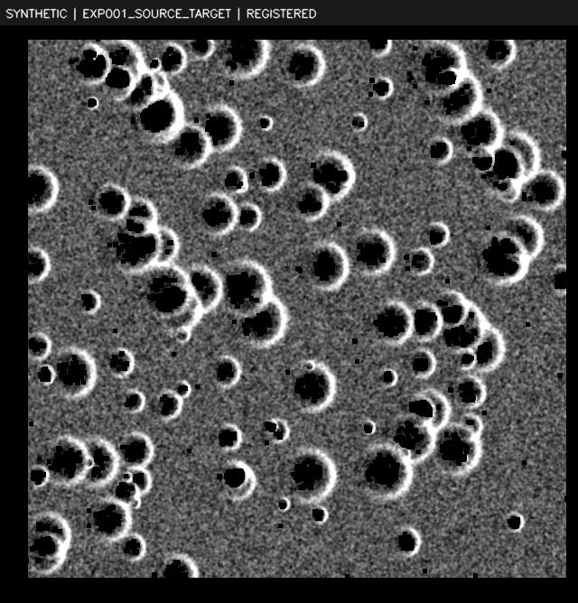
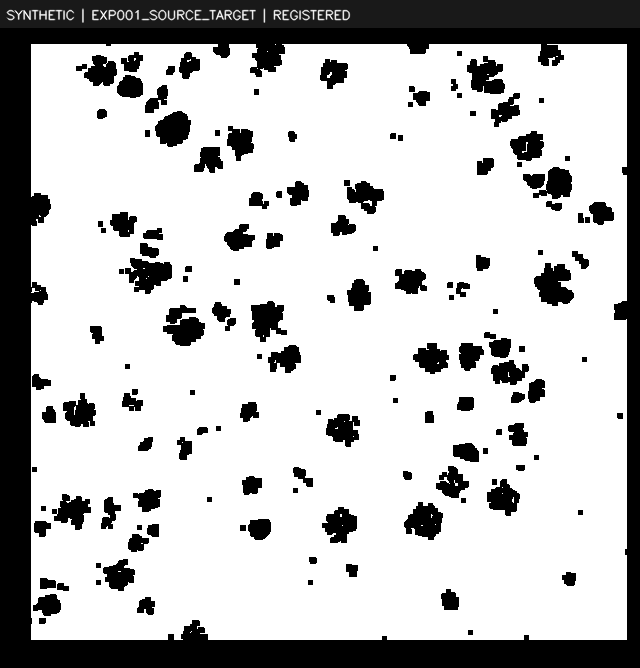
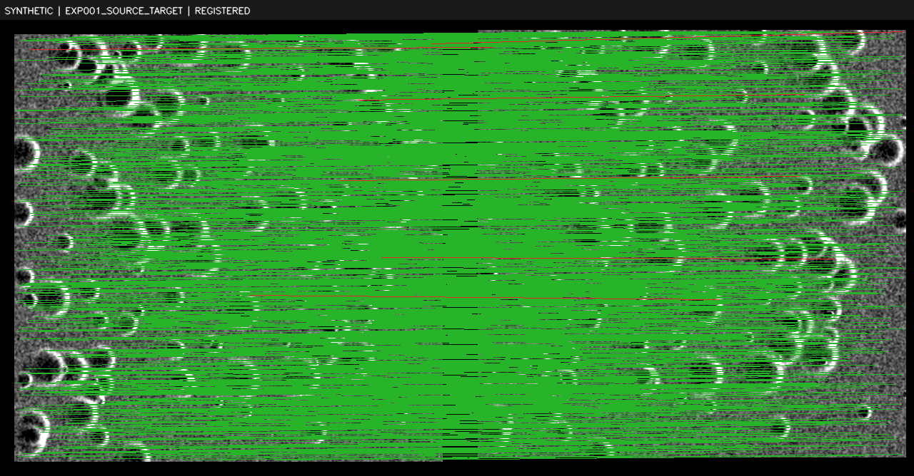

SYNTHETIC EVIDENCE
Decision: REGISTERED — PAIR_GEOMETRY_IMAGE_AND_REVERSE_CYCLE_PASSED
Robust-model inliers are separate from accepted control points. Pixel errors use the named working grid. Ground accuracy and cycle validation are unavailable unless explicitly measured.
Manifest · Configuration · All matches · Robust inliers · Transform · Metrics
{
"status": "REGISTERED",
"reason": "PAIR_GEOMETRY_IMAGE_AND_REVERSE_CYCLE_PASSED",
"candidate_count": 1907,
"inlier_count": 1900,
"inlier_ratio": 0.9963293130571579,
"cycle_closure_error": {
"frame": "SYNTHETIC source native 640x640 grid",
"unit": "pixel",
"population": "forward inliers returned through independently fitted reverse model",
"count": 1900,
"mean": 0.0009136837039149579,
"median": 0.000913683703914958,
"rmse": 0.000913683703914958,
"p90": 0.000913683703914958,
"definition": "Euclidean 2D point residual; P90 uses linear quantile interpolation.",
"status": "MEASURED",
"method": "independent reverse feature detection and robust fit",
"reverse_candidates": 1907,
"reverse_inliers": 1899,
"reverse_matrix": [
[
1.0,
0.0,
-8.999130249023438
],
[
0.0,
1.0,
5.999969482421875
],
[
0.0,
0.0,
1.0
]
]
},
"cycle_check": "MEASURED",
"ground_error_m": null,
"ground_error_reference": "UNAVAILABLE",
"confidence": 0.9963293130571579,
"confidence_calibration": "UNCALIBRATED_SUPPORT_SCORE: minimum of inlier ratio and occupied-grid fraction; not probability or ground accuracy",
"target_working_grid": "SYNTHETIC target native 640x640 grid",
"runtime_s": 0.21110645800035854,
"scope": "Prepared overlap-grid baseline; held-out image matches are not independent ground truth.",
"normalization": {
"source": {
"usable": true,
"percentiles": [
2,
98
],
"low": 90.0,
"high": 162.0
},
"target": {
"usable": true,
"percentiles": [
2,
98
],
"low": 92.0,
"high": 159.0
}
},
"dark_pixel_fraction": {
"source": 0.03521944444444444,
"target": 0.03521944444444444
},
"mask_method": "Normalized intensity threshold; shadow proxy, not a physical illumination model",
"representation": "intensity",
"source_features": 2095,
"target_features": 2101,
"inlier_errors": {
"frame": "SYNTHETIC target native 640x640 grid",
"unit": "pixel",
"population": "all robust-model inliers",
"count": 1900,
"mean": 0.036090710689505326,
"median": 0.023354840476159235,
"rmse": 0.06763126691748078,
"p90": 0.060088272467870775,
"definition": "Euclidean 2D point residual; P90 uses linear quantile interpolation."
},
"heldout_inlier_errors": {
"frame": "SYNTHETIC target native 640x640 grid",
"unit": "pixel",
"population": "held-out inliers, excluded from fitting",
"count": 476,
"mean": 0.035313643323416584,
"median": 0.023596784575696497,
"rmse": 0.06437808700963456,
"p90": 0.05748390666598418,
"definition": "Euclidean 2D point residual; P90 uses linear quantile interpolation."
},
"all_candidate_errors": {
"frame": "SYNTHETIC target native 640x640 grid",
"unit": "pixel",
"population": "all tentative candidates",
"count": 1907,
"mean": 0.08536048726769772,
"median": 0.02341792667984564,
"rmse": 0.9136920761302798,
"p90": 0.06098501902411245,
"definition": "Euclidean 2D point residual; P90 uses linear quantile interpolation."
},
"spatial_coverage": {
"source": {
"occupied_cells": 16,
"eligible_cells": 16,
"grid_coverage": 1.0,
"convex_hull_coverage": 0.9947035843405915,
"clustering_max_cell_fraction": 0.07473684210526316,
"grid_shape": [
4,
4
],
"grid_counts": [
[
77,
122,
108,
107
],
[
125,
141,
118,
116
],
[
138,
142,
140,
137
],
[
127,
107,
103,
92
]
],
"support_pixels": 315874,
"definition": "Cells eligible with >=1 valid pixel; hull rasterized at pixel centers and clipped to supplied overlap/validity mask."
},
"target": {
"occupied_cells": 16,
"eligible_cells": 16,
"grid_coverage": 1.0,
"convex_hull_coverage": 0.9948428803890159,
"clustering_max_cell_fraction": 0.07894736842105263,
"grid_shape": [
4,
4
],
"grid_counts": [
[
81,
123,
114,
117
],
[
122,
145,
114,
125
],
[
123,
146,
132,
150
],
[
116,
101,
97,
94
]
],
"support_pixels": 315874,
"definition": "Cells eligible with >=1 valid pixel; hull rasterized at pixel centers and clipped to supplied overlap/validity mask."
}
},
"ground_residual_m": 0.3381563345874039,
"ground_residual_definition": "Relative image-model RMSE scaled by target working metres/pixel; not absolute lunar ground accuracy.",
"software": {
"opencv": "4.13.0",
"numpy": "2.5.3"
},
"peak_process_memory_bytes": 259178496,
"memory_definition": "Process peak RSS including interpreter/dependencies and input checks, measured before report rendering.",
"synthetic_known_transform_error": {
"frame": "SYNTHETIC target native 640x640 grid",
"unit": "pixel",
"population": "model versus generator ground truth at inlier locations",
"count": 1900,
"mean": 0.00036716832741182554,
"median": 0.00036716832741182564,
"rmse": 0.00036716832741182564,
"p90": 0.00036716832741182564,
"definition": "Euclidean 2D point residual; P90 uses linear quantile interpolation."
}
}







